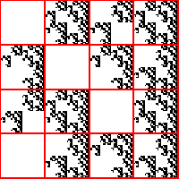
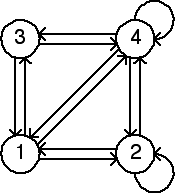

Second Homework Set Answers
2(g)


Note the empty length 2 addresses are 11, 23, 32, and 33. Consequently, the forbidden transitions are
1 → 1,
3 → 2,
2 → 3,
and
3 → 3.
These are the missing arrows.
Return to
Homework 2 Practice
.